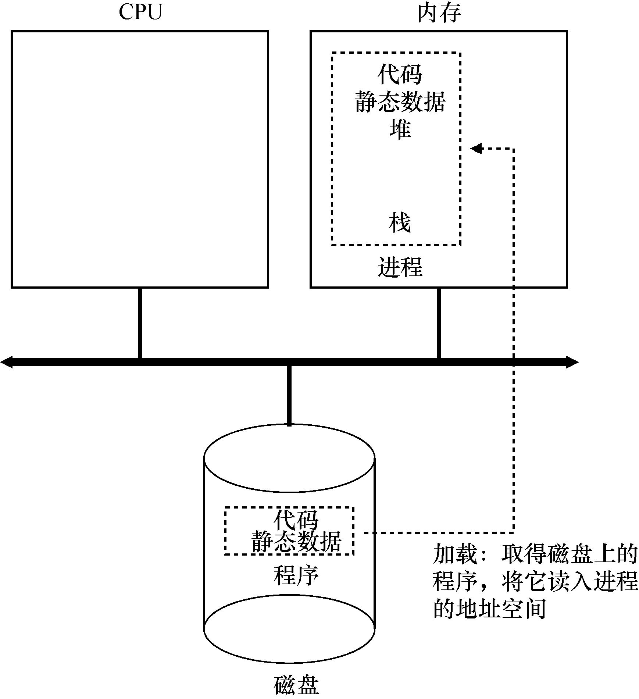
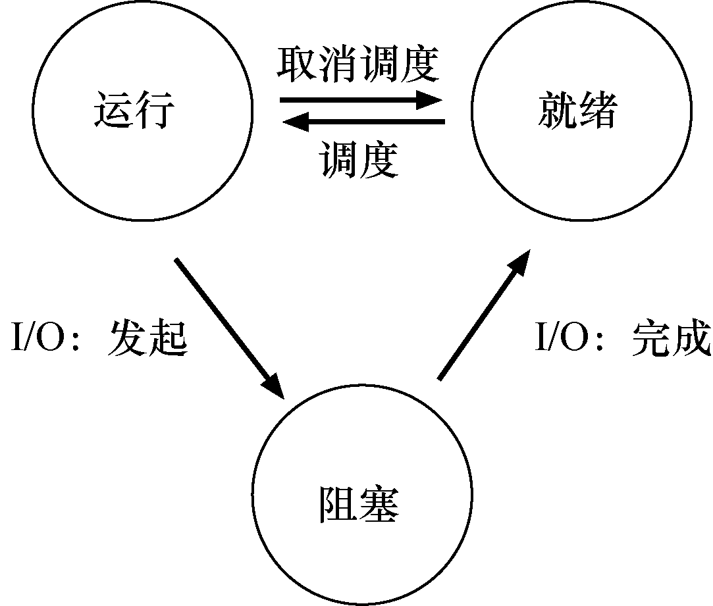
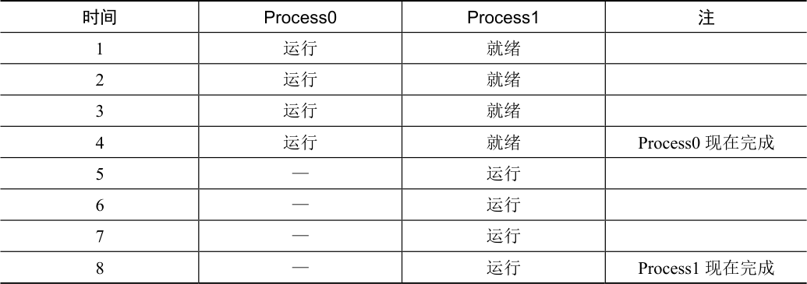
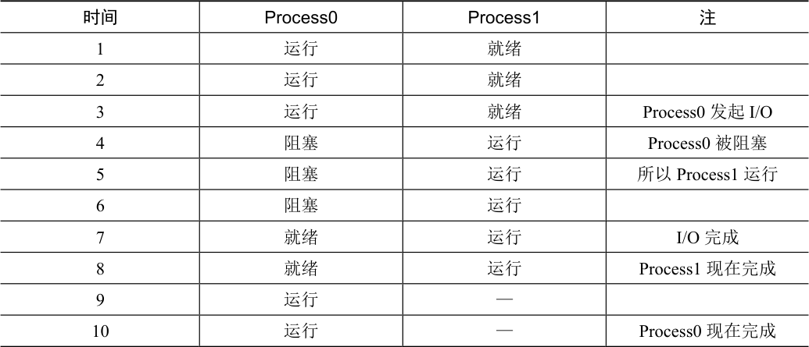

本章讨论操作系统提供的基本的抽象——进程。进程的非正式定义非常简单：进程就是运行中的程序。程序本身是没有生命周期的，它只是存在磁盘上面的一些指令（也可能是一些静态数据）。是操作系统让这些字节运行起来，让程序发挥作用。
事实表明，人们常常希望同时运行多个程序。比如：在使用计算机或者笔记本的时候，我们会同时运行浏览器、邮件、游戏、音乐播放器，等等。实际上，一个正常的系统可能会有上百个进程同时在运行。如果能实现这样的系统，人们就不需要考虑这个时候哪一个CPU 是可用的，使用起来非常简单。因此我们的挑战是:
关键问题：如何提供有许多CPU 的假象？
虽然只有少量的物理CPU 可用，但是操作系统如何提供几乎有无数个CPU 可用的假象？
操作系统通过虚拟化（virtualizing）CPU 来提供这种假象。通过让一个进程只运行一个时间片，然后切换到其他进程，操作系统提供了存在多个虚拟CPU 的假象。这就是时分共享（time sharing）CPU 技术，允许用户如愿运行多个并发进程。潜在的开销就是性能损失，因为如果CPU 必须共享，每个进程的运行就会慢一点。
要实现CPU 的虚拟化，要实现得好，操作系统就需要一些低级机制以及一些高级智能。我们将低级机制称为机制（mechanism）。机制是一些低级方法或协议，实现了所需的功能。例如，我们稍后将学习如何实现上下文切换（context switch），它让操作系统能够停止运行一个程序，并开始在给定的CPU 上运行另一个程序。所有现代操作系统都采用了这种分时机制。
提示：使用时分共享（和空分共享）
时分共享（time sharing）是操作系统共享资源所使用的最基本的技术之一。通过允许资源由一个实体使用一小段时间，然后由另一个实体使用一小段时间，如此下去，所谓的资源（例如，CPU 或网络链接）可以被许多人共享。时分共享的自然对应技术是空分共享，资源在空间上被划分给希望使用它的人。例如，磁盘空间自然是一个空分共享资源，因为一旦将块分配给文件，在用户删除文件之前，不可能将它分配给其他文件。
在这些机制之上，操作系统中有一些智能以策略（policy）的形式存在。策略是在操作系统内做出某种决定的算法。例如，给定一组可能的程序要在CPU 上运行，操作系统应该运行哪个程序？操作系统中的调度策略（scheduling policy）会做出这样的决定，可能利用历史信息（例如，哪个程序在最后一分钟运行得更多？）、工作负载知识（例如，运行什么类型的程序？）以及性能指标（例如，系统是否针对交互式性能或吞吐量进行优化？）来做出决定。
4.1 抽象：进程¶
操作系统为正在运行的程序提供的抽象，就是所谓的进程（process）。正如我们上面所说的，一个进程只是一个正在运行的程序。在任何时刻，我们都可以清点它在执行过程中访问或影响的系统的不同部分，从而概括一个进程。
为了理解构成进程的是什么，我们必须理解它的机器状态（machine state）：程序在运行时可以读取或更新的内容。在任何时刻，机器的哪些部分对执行该程序很重要？
进程的机器状态有一个明显组成部分，就是它的内存。指令存在内存中。正在运行的程序读取和写入的数据也在内存中。因此进程可以访问的内存（称为地址空间，address space）是该进程的一部分。
进程的机器状态的另一部分是寄存器。许多指令明确地读取或更新寄存器，因此显然，它们对于执行该进程很重要。
请注意，有一些非常特殊的寄存器构成了该机器状态的一部分。例如，程序计数器（Program Counter，PC）（有时称为指令指针，Instruction Pointer 或IP）告诉我们程序当前正在执行哪个指令；类似地，栈指针（stack pointer）和相关的帧指针（frame pointer）用于管理函数参数栈、局部变量和返回地址。
提示：分离策略和机制
在许多操作系统中，一个通用的设计范式是将高级策略与其低级机制分开[L+75]。你可以将机制看成为系统的“如何（how）”问题提供答案。例如，操作系统如何执行上下文切换？策略为“哪个（which）”问题提供答案。例如，操作系统现在应该运行哪个进程？将两者分开可以轻松地改变策略，而不必重新考虑机制，因此这是一种模块化（modularity）的形式，一种通用的软件设计原则。
最后，程序也经常访问持久存储设备。此类I/O 信息可能包含当前打开的文件列表。
4.2 进程API¶
虽然讨论真实的进程API 将推迟到第 5 章讲解，但这里先介绍一下操作系统的所有接口必须包含哪些内容。所有现代操作系统都以某种形式提供这些API。
创建（create）：操作系统必须包含一些创建新进程的方法。在shell 中键入命令
或双击应用程序图标时，会调用操作系统来创建新进程，运行指定的程序。
销毁（destroy）：由于存在创建进程的接口，因此系统还提供了一个强制销毁进
程的接口。当然，很多进程会在运行完成后自行退出。但是，如果它们不退出，
用户可能希望终止它们，因此停止失控进程的接口非常有用。
等待（wait）：有时等待进程停止运行是有用的，因此经常提供某种等待接口。
其他控制（miscellaneous control）：除了杀死或等待进程外，有时还可能有其他
控制。例如，大多数操作系统提供某种方法来暂停进程（停止运行一段时间），
然后恢复（继续运行）。
状态（statu）：通常也有一些接口可以获得有关进程的状态信息，例如运行了多
长时间，或者处于什么状态。
4.3 进程创建：更多细节¶
我们应该揭开一个谜，就是程序如何转化为进程。具体来说，操作系统如何启动并运行一个程序？进程创建实际如何进行？
操作系统运行程序必须做的第一件事是将代码和所有静态数据（例如初始化变量）加载（load）到内存中，加载到进程的地址空间中。程序最初以某种可执行格式驻留在磁盘上（disk，或者在某些现代系统中，在基于闪存的SSD 上）。因此，将程序和静态数据加载到内存中的过程，需要操作系统从磁盘读取这些字节，并将它们放在内存中的某处（见图4.1）。

图4.1 加载：从程序到进程
在早期的（或简单的）操作系统中，加载过程尽早（eagerly）完成，即在运行程序之前全部完成。现代操作系统惰性（lazily）执行该过程，即仅在程序执行期间需要加载的代码或数据片段，才会加载。要真正理解代码和数据的惰性加载是如何工作的，必须更多地了解分页和交换的机制，这是我们将来讨论内存虚拟化时要涉及的主题。现在，只要记住在运行任何程序之前，操作系统显然必须做一些工作，才能将重要的程序字节从磁盘读入内存。
将代码和静态数据加载到内存后，操作系统在运行此进程之前还需要执行其他一些操作。必须为程序的运行时栈（run-time stack 或stack）分配一些内存。你可能已经知道，C程序使用栈存放局部变量、函数参数和返回地址。操作系统分配这些内存，并提供给进程。操作系统也可能会用参数初始化栈。具体来说，它会将参数填入main()函数，即argc 和argv数组。
操作系统也可能为程序的堆（heap）分配一些内存。在C 程序中，堆用于显式请求的动态分配数据。程序通过调用malloc()来请求这样的空间，并通过调用free()来明确地释放它。数据结构（如链表、散列表、树和其他有趣的数据结构）需要堆。起初堆会很小。随着程序运行，通过malloc()库API 请求更多内存，操作系统可能会参与分配更多内存给进程，以满足这些调用。
操作系统还将执行一些其他初始化任务，特别是与输入/输出（I/O）相关的任务。例如，在UNIX 系统中，默认情况下每个进程都有3 个打开的文件描述符（file descriptor），用于标准输入、输出和错误。这些描述符让程序轻松读取来自终端的输入以及打印输出到屏幕。在本书的第3 部分关于持久性（persistence）的知识中，我们将详细了解I/O、文件描述符等。
通过将代码和静态数据加载到内存中，通过创建和初始化栈以及执行与I/O 设置相关的其他工作，OS 现在（终于）为程序执行搭好了舞台。然后它有最后一项任务：启动程序，在入口处运行，即main()。通过跳转到main()例程（第5 章讨论的专门机制），OS 将CPU的控制权转移到新创建的进程中，从而程序开始执行。
4.4 进程状态¶
既然已经了解了进程是什么（但我们会继续改进这个概念），以及（大致）它是如何创建的，让我们来谈谈进程在给定时间可能处于的不同状态（state）。在早期的计算机系统[DV66，V+65]中，出现了一个进程可能处于这些状态之一的概念。简而言之，进程可以处于以下3 种状态之一。
运行（running）：在运行状态下，进程正在处理器上运行。这意味着它正在执行
指令。
就绪（ready）：在就绪状态下，进程已准备好运行，但由于某种原因，操作系统
选择不在此时运行。
阻塞（blocked）：在阻塞状态下，一个进程执行了某种操作，直到发生其他事件
时才会准备运行。一个常见的例子是，当进程向磁盘发起I/O 请求时，它会被阻塞，
因此其他进程可以使用处理器。

图4.2 进程：状态转换
如果将这些状态映射到一个图上，会得到图4.2。如图4.2 所示，可以根据操作系统的载量，让进程在就绪状态和运行状态之间转换。从就绪到运行意味着该进程已经被调度（scheduled）。从运行转移到就绪意味着该进程已经取消调度（descheduled）。一旦进程被阻塞（例如，通过发起I/O 操作），OS 将保持进程的这种状态，直到发生某种事件（例如，I/O 完成）。此时，进程再次转入就绪状态（也可能立即再次运行，如果操作系统这样决定）。
我们来看一个例子，看两个进程如何通过这些状态转换。首先，想象两个正在运行的进程，每个进程只使用CPU（它们没有I/O）。在这种情况下，每个进程的状态可能如表4.1所示。

表4.1 跟踪进程状态：只看CPU
表格文字
| 时间 | Process0 | Process1 | 注 |
|---|---|---|---|
| 1 | 运行 | 就绪 | |
| 2 | 运行 | 就绪 | |
| 3 | 运行 | 就绪 | |
| 4 | 运行 | 就绪 | Process0 现在完成 |
| 5 | — | 运行 | |
| 6 | — | 运行 | |
| 7 | — | 运行 | |
| 8 | — | 运行 | Process1 现在完成 |
在下一个例子中，第一个进程在运行一段时间后发起I/O 请求。此时，该进程被阻塞，让另一个进程有机会运行。表4.2 展示了这种场景。

表4.2 跟踪进程状态：CPU 和I/O
表格文字
| 时间 | Process0 | Process1 | 注 |
|---|---|---|---|
| 1 | 运行 | 就绪 | |
| 2 | 运行 | 就绪 | |
| 3 | 运行 | 就绪 | Process0 发起I/O |
| 4 | 阻塞 | 运行 | Process0 被阻塞 |
| 5 | 阻塞 | 运行 | 所以Process1 运行 |
| 6 | 阻塞 | 运行 | |
| 7 | 就绪 | 运行 | I/O 完成 |
| 8 | 就绪 | 运行 | Process1 现在完成 |
| 9 | 运行 | — | |
| 10 | 运行 | — | Process0 现在完成 |
更具体地说，Process0 发起I/O 并被阻塞，等待I/O 完成。例如，当从磁盘读取数据或等待网络数据包时，进程会被阻塞。OS 发现Process0 不使用CPU 并开始运行Process1。当Process1 运行时，I/O 完成，将Process0 移回就绪状态。最后，Process1 结束，Process0 运行，然后完成。
请注意，即使在这个简单的例子中，操作系统也必须做出许多决定。首先，系统必须决定在Process0 发出I/O 时运行Process1。这样做可以通过保持CPU 繁忙来提高资源利用率。其次，当I/O 完成时，系统决定不切换回Process0。目前还不清楚这是不是一个很好的决定。你怎么看？这些类型的决策由操作系统调度程序完成，这是我们在未来几章讨论的主题。
4.5 数据结构¶
操作系统是一个程序，和其他程序一样，它有一些关键的数据结构来跟踪各种相关的信息。例如，为了跟踪每个进程的状态，操作系统可能会为所有就绪的进程保留某种进程列表（process list），以及跟踪当前正在运行的进程的一些附加信息。操作系统还必须以某种方式跟踪被阻塞的进程。当I/O 事件完成时，操作系统应确保唤醒正确的进程，让它准备好再次运行。
图4.3 展示了OS 需要跟踪xv6 内核中每个进程的信息类型[CK+08]。“真正的”操作系统中存在类似的进程结构，如Linux、macOS X 或Windows。查看它们，看看有多复杂。
从图4.3 中可以看到，操作系统追踪进程的一些重要信息。对于停止的进程，寄存器上下文将保存其寄存器的内容。当一个进程停止时，它的寄存器将被保存到这个内存位置。通过恢复这些寄存器（将它们的值放回实际的物理寄存器中），操作系统可以恢复运行该进程。我们将在后面的章节中更多地了解这种技术，它被称为上下文切换（context switch）。
// the registers xv6 will save and restore
// to stop and subsequently restart a process
struct context {
int eip;
int esp;
int ebx;
int ecx;
int edx;
int esi;
int edi;
int ebp;
};
// the different states a process can be in
enum proc_state { UNUSED, EMBRYO, SLEEPING,
RUNNABLE, RUNNING, ZOMBIE };
// the information xv6 tracks about each process
// including its register context and state
struct proc {
char *mem; // Start of process memory
uint sz; // Size of process memory
char *kstack; // Bottom of kernel stack
// for this process
enum proc_state state; // Process state
int pid; // Process ID
struct proc *parent; // Parent process
void *chan; // If non-zero, sleeping on chan
int killed; // If non-zero, have been killed
struct file *ofile[NOFILE]; // Open files
struct inode *cwd; // Current directory
struct context context; // Switch here to run process
struct trapframe *tf; // Trap frame for the
// current interrupt
};
图4.3 xv6 的proc 结构
从图4.3 中还可以看到，除了运行、就绪和阻塞之外，还有其他一些进程可以处于的状态。有时候系统会有一个初始（initial）状态，表示进程在创建时处于的状态。另外，一个进程可以处于已退出但尚未清理的最终（final）状态（在基于UNIX 的系统中，这称为僵尸状态1）。这个最终状态非常有用，因为它允许其他进程（通常是创建进程的父进程）检查进程的返回代码，并查看刚刚完成的进程是否成功执行（通常，在基于UNIX 的系统中，程序成功完成任务时返回零，否则返回非零）。完成后，父进程将进行最后一次调用（例如，wait()），以等待子进程的完成，并告诉操作系统它可以清理这个正在结束的进程的所有相关数据结构。
补充：数据结构——进程列表
操作系统充满了我们将在这些讲义中讨论的各种重要数据结构（data structure）。进程列表（process list）是第一个这样的结构。这是比较简单的一种，但是，任何能够同时运行多个程序的操作系统当然都会有类似这种结构的东西，以便跟踪系统中正在运行的所有程序。有时候人们会将存储关于进程的信息的个体结构称为进程控制块（Process Control Block，PCB），这是谈论包含每个进程信息的C 结构的一种方式。
4.6 小结¶
我们已经介绍了操作系统的最基本抽象：进程。它很简单地被视为一个正在运行的程序。有了这个概念，接下来将继续讨论具体细节：实现进程所需的低级机制和以智能方式调度这些进程所需的高级策略。结合机制和策略，我们将加深对操作系统如何虚拟化CPU的理解。
参考资料¶
[BH70]“The Nucleus of a Multiprogramming System”Per Brinch Hansen Communications of the ACM, Volume 13, Number 4, April 1970本文介绍了Nucleus，它是操作系统历史上的第一批微内核（microkernel）之一。体积更小、系统更小的想法，在操作系统历史上是不断重复的主题。这一切都始于Brinch Hansen 在这里描述的工作。
[CK+08]“The xv6 Operating System”Russ Cox, Frans Kaashoek, Robert Morris, Nickolai Zeldovich xv6 是世界上颇有魅力的、真实的小型操作系统。请下载并利用它来了解更多关于操作系统实际工作方式的细节。
[DV66]“Programming Semantics for Multiprogrammed Computations”Jack B. Dennis and Earl C. Van Horn Communications of the ACM, Volume 9, Number 3, March 1966本文定义了构建多道程序系统的许多早期术语和概念。
[L+75]“Policy/mechanism separation in Hydra”R. Levin, E. Cohen, W. Corwin, F. Pollack, W. Wulf SOSP 1975一篇关于如何在名为Hydra 的研究操作系统中构建一些操作系统的早期论文。虽然Hydra 从未成为主流操作系统，但它的一些想法影响了操作系统设计人员。
[V+65]“Structure of the Multics Supervisor”V.A. Vyssotsky, F. J. Corbato, R. M. Graham Fall Joint Computer Conference, 1965一篇关于Multics 的早期论文，描述了我们在现代系统中看到的许多基本概念和术语。计算作为实用工具，这背后的一些愿景终于在现代云系统中得以实现。
作业¶
补充：模拟作业
模拟作业以模拟器的形式出现，你运行它以确保理解某些内容。模拟器通常是Python 程序，它们让你能够生成不同的问题（使用不同的随机种子），也让程序为你解决问题（带-c 标志），以便你检查答案。使用-h 或--help 标志运行任何模拟器，将提供有关模拟器所有选项的更多信息。
每个模拟器附带的README 文件提供了有关如何运行它的更多详细信息，其中详细描述了每个标志。
程序process-run.py 让你查看程序运行时进程状态如何改变，是在使用CPU（例如，执行相加指令）还是执行I/O（例如，向磁盘发送请求并等待它完成）。详情请参阅README文件。
问题¶
1．用以下标志运行程序：./process-run.py -l 5:100,5:100。CPU 利用率（CPU 使用时间的百分比）应该是多少？为什么你知道这一点？利用 -c 标记查看你的答案是否正确。
2．现在用这些标志运行：./process-run.py -l 4:100,1:0。这些标志指定了一个包含4 条指令的进程（都要使用CPU），并且只是简单地发出I/O 并等待它完成。完成这两个进程需要多长时间？利用-c 检查你的答案是否正确。
3．现在交换进程的顺序：./process-run.py -l 1:0,4:100。现在发生了什么？交换顺序是否重要？为什么？同样，用-c 看看你的答案是否正确。
4．现在探索另一些标志。一个重要的标志是-S，它决定了当进程发出I/O 时系统如何反应。将标志设置为SWITCH_ON_END，在进程进行I/O 操作时，系统将不会切换到另一个进程，而是等待进程完成。当你运行以下两个进程时，会发生什么情况？一个执行I/O，另一个执行CPU 工作。（-l 1:0,4:100 -c -S SWITCH_ON_END）
5．现在，运行相同的进程，但切换行为设置，在等待I/O 时切换到另一个进程（-l 1:0,4:100-c -S SWITCH_ON_IO）。现在会发生什么？利用-c 来确认你的答案是否正确。
6．另一个重要的行为是I/O 完成时要做什么。利用-I IO_RUN_LATER，当I/O 完成时，发出它的进程不一定马上运行。相反，当时运行的进程一直运行。当你运行这个进程组合时会发生什么？（./process-run.py -l 3:0,5:100,5:100,5:100 -S SWITCH_ON_IO -I IO_RUN_LATER -c -p）系统资源是否被有效利用？
7．现在运行相同的进程，但使用-I IO_RUN_IMMEDIATE 设置，该设置立即运行发出I/O 的进程。这种行为有何不同？为什么运行一个刚刚完成I/O 的进程会是一个好主意？
8．现在运行一些随机生成的进程，例如-s 1 -l 3:50,3:50, -s 2 -l 3:50,3:50, -s 3 -l 3:50,3:50。看看你是否能预测追踪记录会如何变化？当你使用-I IO_RUN_IMMEDIATE 与-I IO_RUN_LATER 时会发生什么？当你使用-S SWITCH_ON_IO 与-S SWITCH_ON_END 时会发生什么？
-
是的，僵尸状态。就像真正的僵尸一样，这些“僵尸”相对容易杀死。但是，通常建议使用不同的技术。 ↩